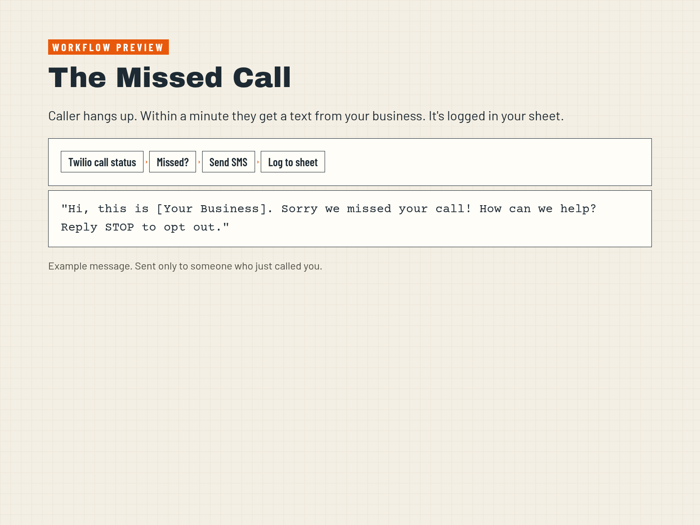

How to build a missed call text-back in n8n
Here's the job. Somebody calls, you can't pick up, and within a minute they get a text from your business asking how you can help. It's four nodes.
The four nodes

- Webhook. In Twilio, set your number's call status callback to the n8n production URL, method POST.
- IF. Check
CallStatusmatchesno-answer|busy|failed. Answered calls stop here. - Twilio: send SMS. To
Fromon the incoming call. Keep it under 160 characters and include your business name and "Reply STOP to opt out." - Google Sheets: append. Log the number, time and that you texted back.
Hi, this is [Your Business]. Sorry we missed your call! How can we help? Reply STOP to opt out.
The rules that matter
This is general information, not legal advice. A single reply to someone who just called you is generally treated as a response, not marketing. It changes if you start sending that number promos. Marketing texts need prior express written consent under the TCPA, and Florida's FTSA adds its own rules. Name your business, include STOP, send between 8 AM and 9 PM their time, and register for 10DLC through Twilio. Twilio bills per text after the trial.
Where to go from here
The text-back is one of eight workflows in The Missed Call Manual. The others sort urgent leads, answer late emails, ask for reviews and send you a Monday summary. Or grab the free lead sorter first.